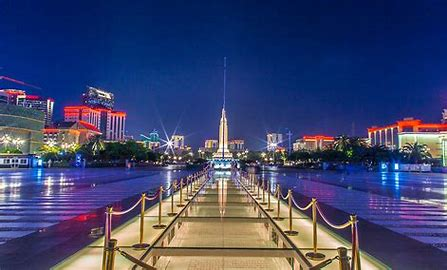
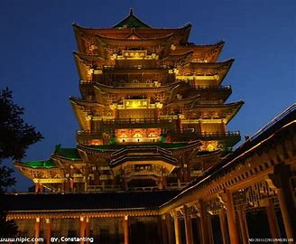
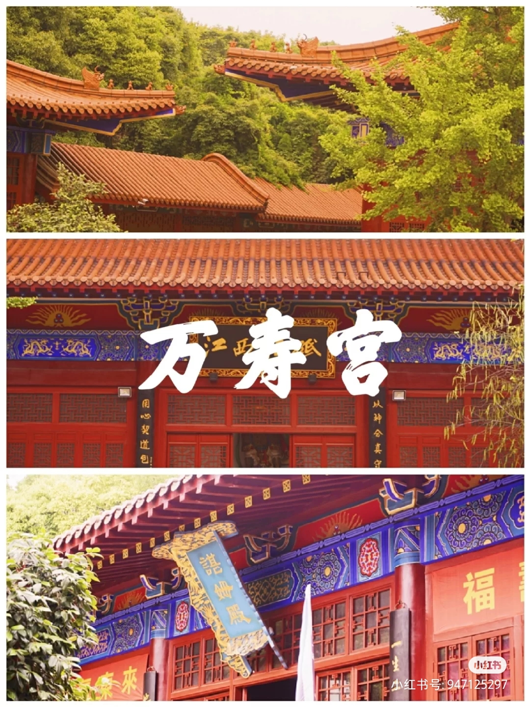

| Name | Brief Discription | Interesting points | Images |
|---|---|---|---|
| BiYi Square |
Bayi Square covers an area of 78,000 square meters, which mainly includes four functional areas: the memorial area marked by the memorial tower, the remembrance area at the south end, the remembrance area with 8 reliefs as the carrier, and the citizen leisure area at the north end. Bayi Square is the heart of Nanchang City, the largest city central square in Jiangxi Province, and stands the "August 1 Nanchang Uprising Memorial Tower" inscribed by Marshal Ye Jianying. |
|
 |
| TengWang Pavilion |
Tengwang Pavilion, located on the east bank of Ganjiang River, Yanjiang Road, northwest of Nanchang City, Jiangxi Province, was built in the fourth year of Tang Yonghui (in 653 AD). It was built by Li Yuanying, the younger brother of Emperor Taizong Li Shimin of the Tang Dynasty, when Li Yuanying was the governor of Hongzhou in the south of the Yangtze River. The name has been passed down through the ages, and it has become famous for later generations, making it the first to be famous in the third floor, so it is also known as the first of the "Three Famous Buildings in Jiangnan" |
|
 |
| Wanshou Palace | Xishan Longevity Palace, a famous ancient temple in the south of the Yangtze River, the twelfth cave of Taoism 36 caves, and the 38 blessed places of 72 blessed places, were built to commemorate Xu Xun, a famous Taoist road in the Eastern Jin Dynasty. It has a history of more than 1,600 years. It covers an area of 31,000 square meters and was built in the first year of the Eastern Jin Dynasty (376) |
|
 |